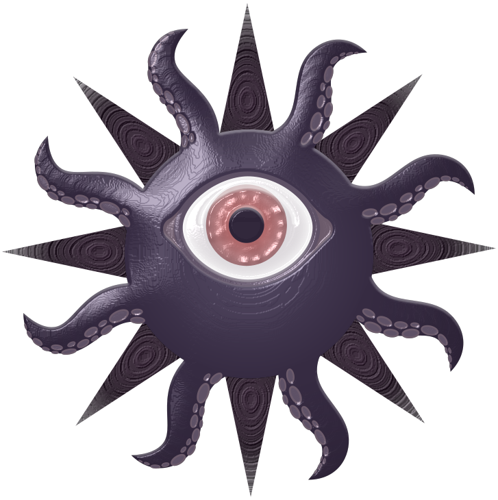
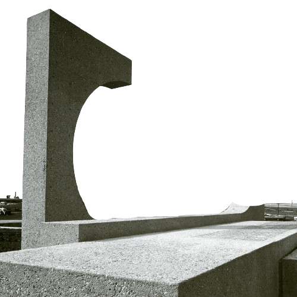
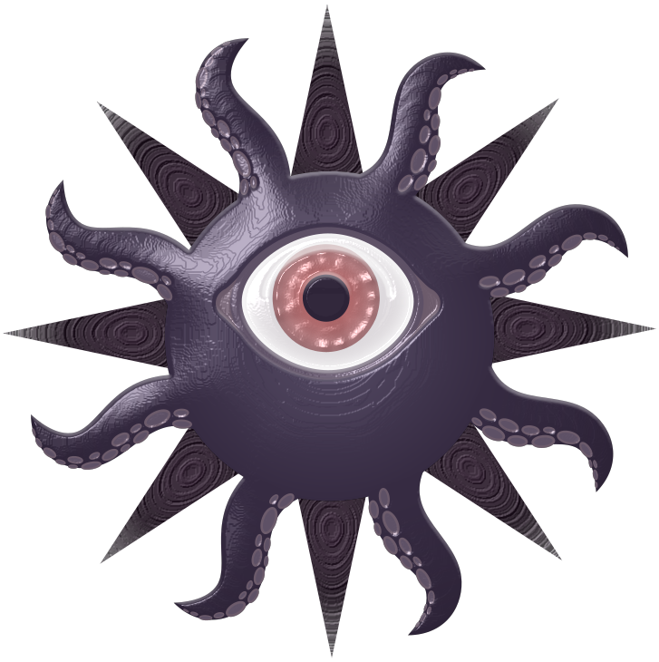
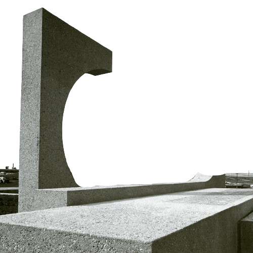

The dark. The dark loves you like no other. Like a parent leaning over the edge of the crib at night, watching even as the newborn sleeps and does not need them.
I love you.
Think of the shadows in the troughs between coulees. The clear night sky visible on the west side before anything else was built here. Just the dark and the grasses. Just feeling our way by sound, by touch.
Think of muddled waters, of uncertain times. The darkness of nebulosity and not knowing. The black blade of controversy slashing apart reputations. The shadow that the boulder casts over Sisyphus as he toils.
I antagonise you because I love you. I fight you because I love you. I want you to be strong.
The sun sets in the west. Tenebrae Fiant.